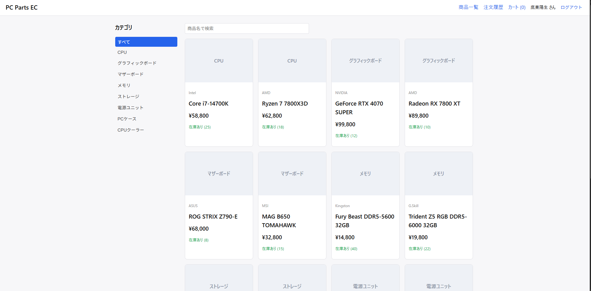
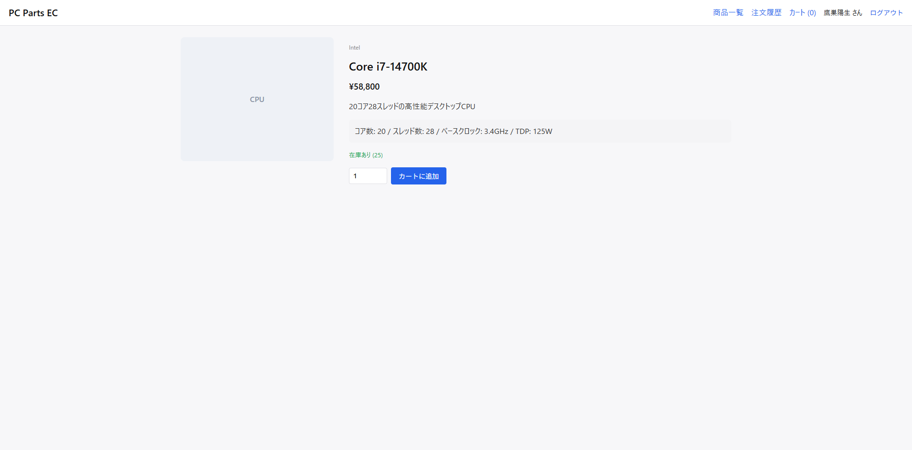
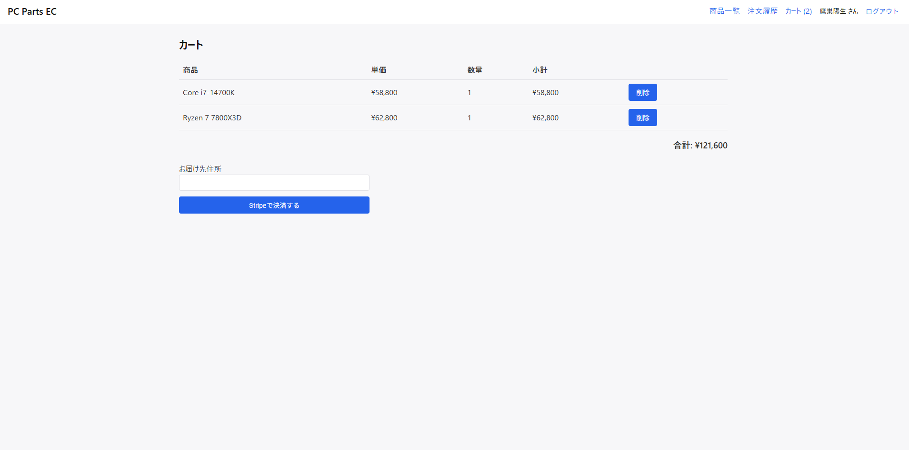
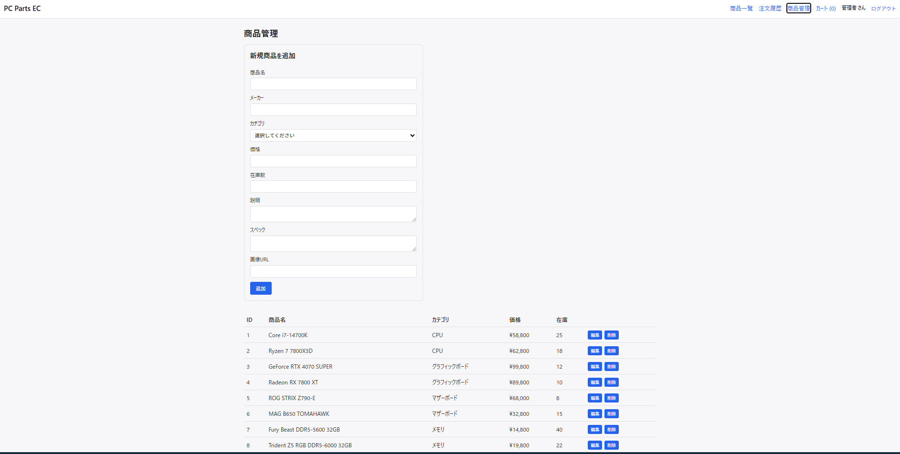

PC Parts EC Site
PCパーツ専門のECサイトです。Spring Boot(Java)によるREST API設計とMySQLのDB設計を中心に、JWT認証・ロールベース認可・Stripe決済連携までを一通り実装しました。
ローカル環境（Spring Boot + MySQL + React）で動作するアプリのため、常設の公開デモは用意していません。このページでは実際にローカルで起動した画面のスクリーンショットで内容を紹介します。
概要
会員登録・ログイン、商品検索・カテゴリ絞り込み、カート機能、Stripeを使ったテスト決済、注文履歴、管理者用の商品・カテゴリCRUDまで、一般的なECサイトに必要な機能を一通り実装しています。特に力を入れたのはSpring Boot側のAPI設計とMySQLのDB設計で、フロントエンドはAPIの動作確認用のSPAという位置づけです。
アーキテクチャ
React（SPA）からJWT付きのREST/JSONでSpring Boot APIを呼び出し、Spring Data JPA経由でMySQLへアクセスします。決済はStripe Checkout Sessionを利用し、Webhookで決済完了イベントを受け取ってから在庫を減らす設計にすることで、決済未完了なのに在庫だけ減る不整合を防いでいます。バックエンドはController→Service→Repositoryの3層構成に、DTOを挟んでEntityをそのまま外部に出さないようにしています。
画面
商品一覧
カテゴリ絞り込みとキーワード検索に対応した商品一覧画面です。カテゴリはCPU・グラフィックボード・マザーボードなど8種類を用意し、それぞれ在庫数まで表示しています。

カテゴリ絞り込み・検索に対応した商品一覧画面。
商品詳細
価格・スペック・在庫数を表示し、数量を指定してカートに追加できます。ログインしていればヘッダーにユーザー名が表示され、注文履歴やカートへの導線もここから確認できます。

スペック表示とカート追加ができる商品詳細画面。
カート・決済
カートに追加した商品の一覧・単価・数量・小計・合計金額を表示します。お届け先住所を入力して「Stripeで決済する」を押すと、Stripe Checkout Sessionを使ったテスト決済画面に遷移します。

カート内容の確認とStripe決済への導線。
管理者用の商品管理
管理者アカウントでログインすると使える商品管理画面です。新規商品の登録フォームと、登録済み商品の一覧・編集・削除がこの1画面で行えます。

新規登録・編集・削除ができる管理者用の商品管理画面。
主な機能
JWT認証・ロールベース認可
Spring Securityでステートレスな認証を実装し、`/api/admin/**`はADMINロールのみアクセス可能に制限しています。
Stripe決済連携
Checkout Sessionを使ったテスト決済に対応。Webhookで決済完了を検知してから在庫を確定させます。
管理者用CRUD
管理者アカウントでログインすると、商品・カテゴリの新規登録や編集・削除ができる管理画面が使えます。
例外ハンドリングの一元化
`@RestControllerAdvice`でバリデーションエラーやリソース未検出を共通フォーマットのJSONに変換しています。
今後の改善点
現状は手動でのE2E動作確認のみでユニットテスト・結合テストは未整備なので、JUnit + MockMvcでのテスト追加を予定しています。また在庫の同時アクセス制御（楽観ロック）やDocker化による環境構築の簡略化も次のステップとして考えています。